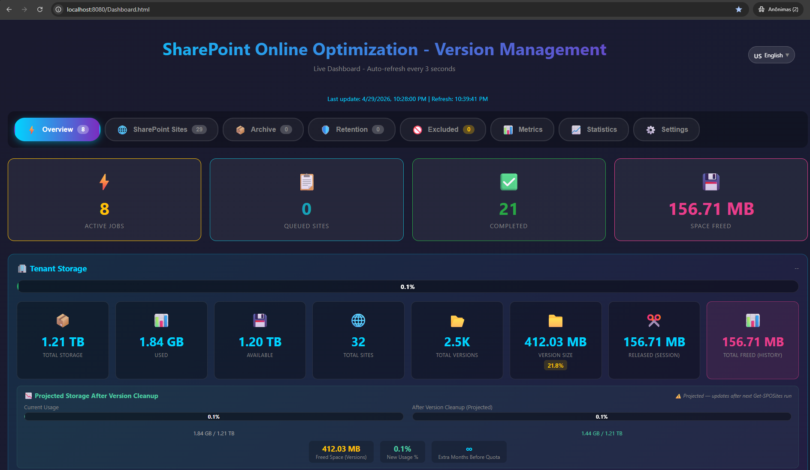
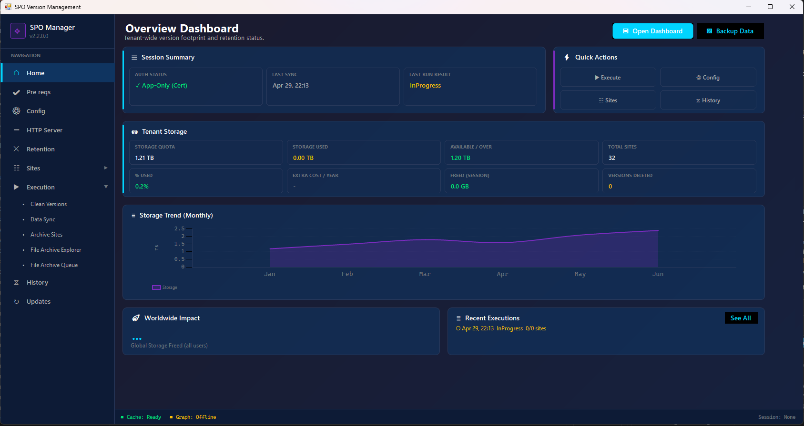
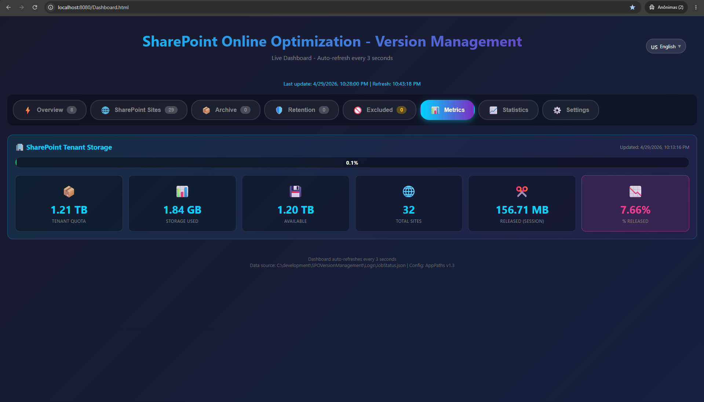
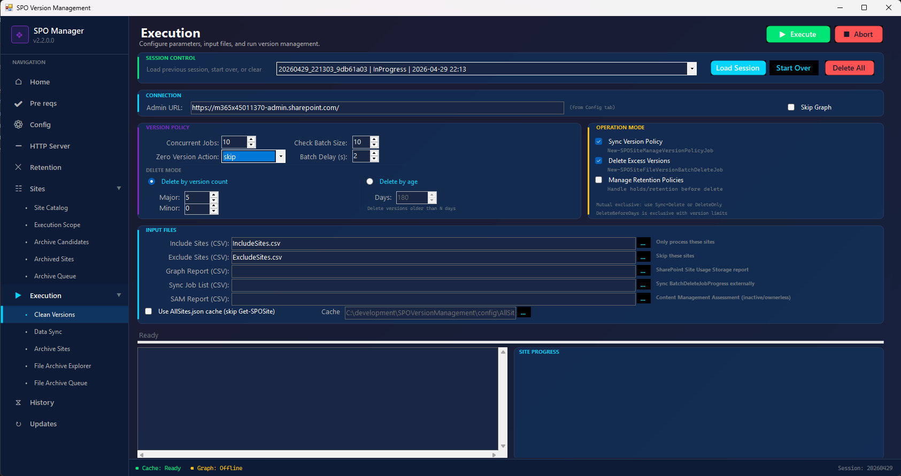
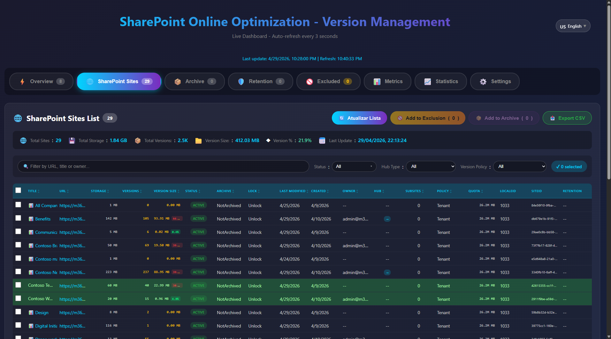
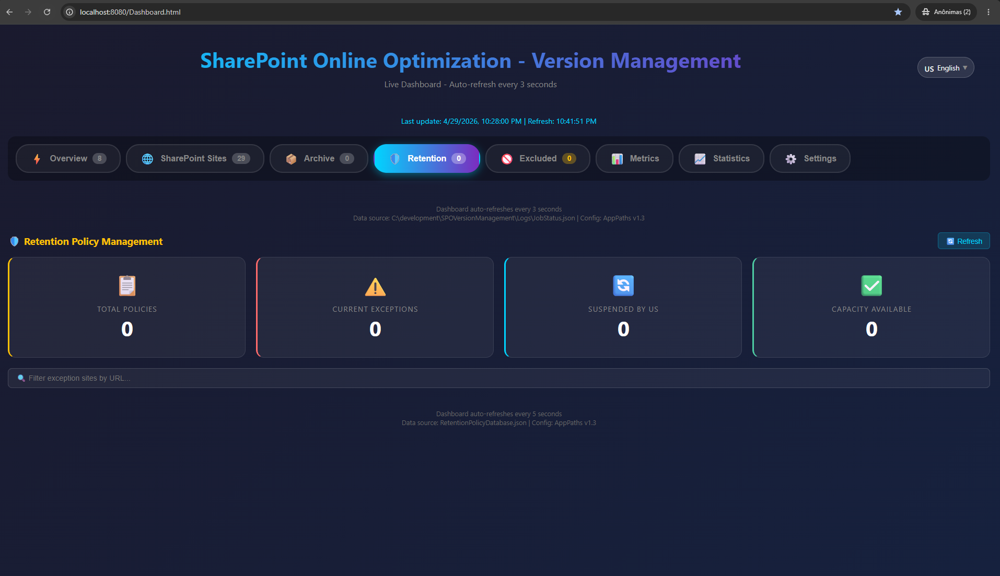
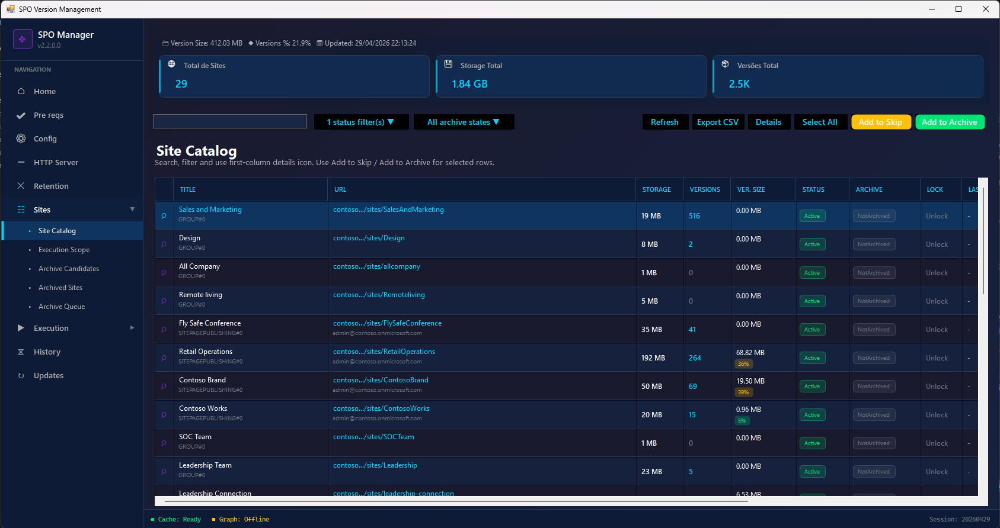
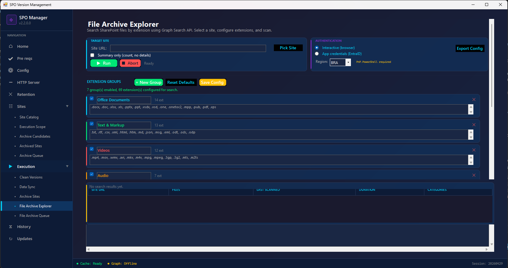

Enterprise-grade orchestration that eliminates storage waste from excess file versions — at tenant scale, in parallel, using official Microsoft APIs.
Microsoft charges $0.20/GB/month for SharePoint storage beyond base allocation. Excess file versions are the #1 hidden cost driver.
Storage savings aren't just about reducing your Microsoft invoice — they represent budget that can be redirected toward productivity, innovation, and workforce transformation.
Paying Microsoft $0.20/GB/month for millions of excess file versions that provide zero business value. Budget consumed by data nobody uses.
Recovered budget reinvested into Microsoft Copilot licenses, AI-powered productivity, security tools, or employee training programs.
Think about it: $1.8M in recovered storage costs could fund approximately 4,900 Microsoft 365 Copilot licenses — enabling thousands of employees to work faster, make better decisions, and automate repetitive tasks with AI.
Based on aggregate community savings vs. ~$30/user/month Copilot licensing. Actual pricing varies by agreement.
Storage waste isn't just a technical issue. It represents budget that can be redirected toward productivity, innovation, and workforce transformation. Clean, well-governed content also improves Copilot output quality — fewer outdated versions means more relevant AI-generated results across your organization.
Microsoft 365 keeps every version of every file by default. Over time, version history silently consumes 30–70% of your SharePoint storage quota — and there's no native tool to fix it at scale.
SharePoint shows "out of space" warnings. Users can't upload files. You're forced to purchase extra storage at $0.20/GB/month — for data nobody needs.
A 10MB Excel file with 500 versions = 5GB of hidden storage. Multiply across thousands of files and hundreds of sites. The growth is invisible until it's critical.
SharePoint admin center shows storage metrics but provides no way to bulk-clean versions across sites. Manual cleanup of thousands of sites is operationally impossible.
Extra storage costs compound monthly. 1TB of excess versions = $2,400/year. 5TB = $12,000/year. Without intervention, the number only grows.
Not a script. Not a hack. A production-grade orchestration layer built on fully supported Microsoft APIs.
Built entirely on supported SharePoint cmdlets: New-SPOSiteManageVersionPolicyJob and New-SPOSiteFileVersionBatchDeleteJob. Same APIs Microsoft supports for tenant-scale operations.
Does not modify data directly. Does not bypass platform security. Orchestrates native SharePoint operations the same way the admin center does — just at scale, in parallel, with monitoring.
All deleted versions go to the standard SharePoint recycle bin. Full recovery is available for 93 days. No data is permanently removed immediately.
MIT licensed. Every line of code is visible on GitHub. No black boxes. No vendor lock-in. No subscription. Inspect before deploying to your environment.
Custom scripting works for 5 sites. It breaks at 5,000.
Everything from discovery to cleanup to cost reporting — in one free solution
8-tab interactive HTML dashboard: storage breakdown, active jobs, queue, history, sites catalog, excluded sites, archives, and settings. Auto-refreshes every 5 seconds.
8 tabs, real-timeNative WinForms app with 12 panels: Home, Execution, Sites, History, Retention Policies, File Archive, Data Sync, Configuration, Updates, Prerequisites, HTTP Server.
No command-line neededAutomatically calculates money saved based on Microsoft 365 extra storage pricing. Shows before/after comparison, annual savings, and ROI per execution.
$0.20/GB/month formulaProcess multiple sites concurrently with intelligent throttling detection. Automatically tracks Microsoft 429 responses, waits the required interval, and resumes — maximizing throughput without hitting platform limits.
Throttle-aware, auto-adaptsInterrupted mid-execution? Load your session and resume exactly where you left off. Session state is persisted and can be reloaded anytime.
Never lose progressAuto-detect compliance/retention policies blocking version deletion. Suspend them, run cleanup, then auto-resume. Full audit trail maintained.
Handles compliance locksReal-time visibility into your SharePoint storage, version cleanup progress, and cost savings

Live overview with active jobs, queued sites, completed operations, space freed, and full tenant storage breakdown with projected cleanup savings.

Desktop app home panel: session summary, tenant storage metrics (quota, used, available, cost), storage trend chart, worldwide impact, and recent executions.

Detailed storage breakdown: tenant quota (TB), storage used, available space, total sites, released storage per session, and percentage released.

Configure version policies, delete modes (by count or age), concurrent jobs (1-10), batch size, retention policy handling. Real-time console and progress tracking.

Complete site catalog with storage size, version counts, status badges, and filtering.

View, suspend, and resume compliance retention policies blocking version cleanup.

High-performance virtual grid handling thousands of sites. Search, filter, queue management, and CSV export.

Search SharePoint for large files by extension (video, audio, CAD). Graph API powered discovery of storage hogs.
From download to cost savings in 5 steps — under 5 minutes to first assessment
Get the latest release from GitHub. Extract and run — no installer needed.
Authenticate via certificate (app-only) or interactive browser login with MFA.
Scan all sites via Admin API. Pull storage and version data from Graph reports.
Review the dashboard. See storage consumed by versions. Quantify savings in USD.
Apply version policies. Execute parallel cleanup. Watch cost savings in real-time.
Proven outcomes across enterprise, mid-market, and regulated environments
Excess versions consuming 2.1TB across document libraries. Facing $5,040/year in extra storage charges from Microsoft.
Storage at 98%. No visibility into what's consuming space. Manual cleanup would take weeks of admin time.
Legal holds and retention policies prevent version deletion. Need to handle exceptions without compliance violations.
Aggregate results from organizations using SPO Version Management globally (opt-in, anonymous telemetry)
SharePoint version management is the practice of controlling how many historical versions of documents are retained in SharePoint Online libraries. SharePoint automatically saves every version of every file by default (up to 500 major versions), creating a hidden storage problem. Without active management, version history silently consumes 30–70% of a tenant's storage quota, driving significant and avoidable Microsoft 365 extra storage costs at $0.20/GB/month.
SharePoint Online storage grows rapidly because:
The most effective method is automated version management: setting version limits (e.g., keep only the last 100 versions), auditing version history consumption across all sites, and removing excess versions that serve no business or compliance purpose. SPO Version Management automates this lifecycle using official Microsoft APIs — New-SPOSiteManageVersionPolicyJob for policy enforcement and New-SPOSiteFileVersionBatchDeleteJob for batch deletion. Organizations typically recover 20–60% of consumed storage, translating to $4,800–$14,400 in annual savings per 10TB.
Yes. The tool uses exclusively official Microsoft SharePoint Online Management Shell cmdlets. It operates as a pure orchestration layer — the same mechanisms used by the SharePoint admin center. A non-destructive assessment mode (SyncOnly) lets you quantify savings without making any changes.
No. The tool never reads, modifies, or accesses file content. It calls SharePoint version management APIs that operate on version metadata at the platform level. No file data passes through the tool.
This is an independent open-source community tool, not a Microsoft product. However, it uses only officially documented and supported Microsoft APIs. The underlying cmdlets are the same ones Microsoft recommends for tenant-scale version management.
Absolutely. Run in SyncOnly mode to assess your environment without making any changes. When you do run cleanup, all deleted versions go to the SharePoint recycle bin with 93 days of full recovery. Nothing is permanently removed immediately.
Initial discovery takes 2–5 minutes depending on tenant size. This gives you full visibility into storage consumption, version counts per site, and estimated savings in USD — before making any decisions.
The tool automatically detects Microsoft Purview retention policies that block version deletion. It can suspend them during cleanup, execute version management, and then auto-resume policies — all with a complete audit trail for compliance reporting.
Run a non-destructive assessment in under 5 minutes. SyncOnly mode applies policies without deleting a single version. Review the Dashboard, quantify savings in USD, then decide.
Download Free — Identify Reclaimable Budget NowOfficial Microsoft APIs • Pure orchestration (no data manipulation) • Recycle bin recovery (93 days) • MIT License • No vendor lock-in